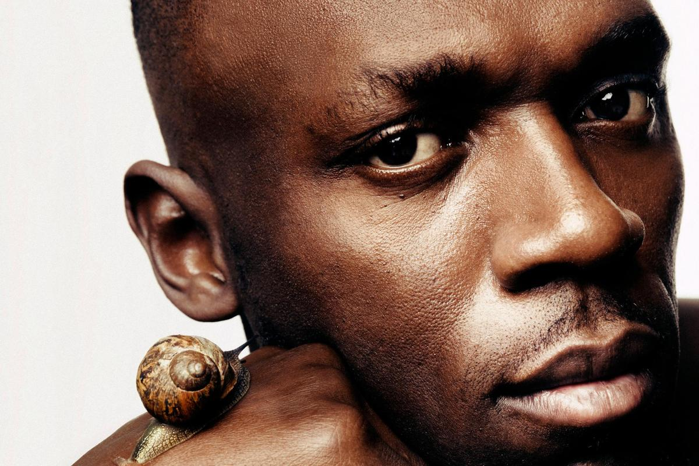

-
Usain Bolt: baby steps for a restless giant
Walking the streets of London with Usain Bolt is both bizarre and uplifting. At 6ft 5in and carried by those long, powerful legs, he’s hard to miss. As we pass each office window, 15 or 20 faces press up to the glass, people waving and smiling. Other pedestrians stop dead in their tracks, stare in disbelief, then rush towards him, laughing. Several car drivers switch...
